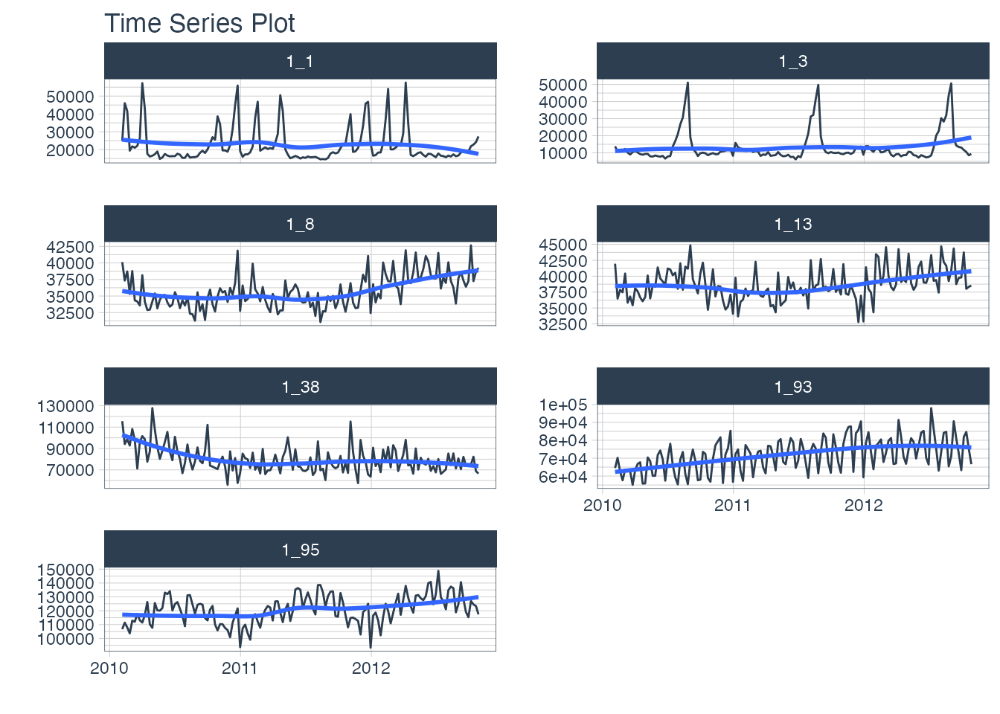
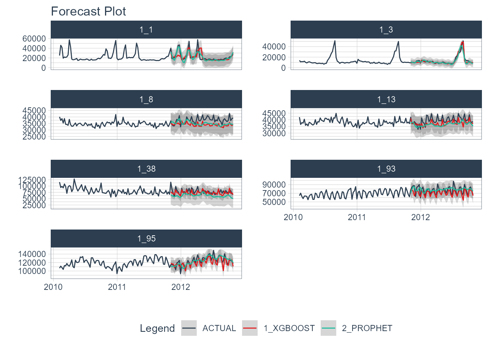

Modeltime is built for scale, and as such many users may want to use a distributed backend that allows for scale beyond their local machine. One such tool is Spark, a unified engine for large-scale data analytics. In this tutorial, we’ll show you how to use the Modeltime Spark Backend for high-performance computing.
Spark for Iterative (Nested) Forecasting
One of the most common situations that parallel computation is required is when doing iterative forecasting where the data scientist needs to experiment with 10+ models across 10,000+ time series. It’s common for this large-scale, high-performance forecasting exercise to take days.
We’ll show you how we can combine Modeltime Nested Forecasting and it’s Parallel Spark Backend to scale this computation with distributed parallel Spark execution. Let’s go!
System Requirements
This tutorial requires:
sparklyr: Used to register the spark
foreachadapter viaregisterDoSpark().Java: Spark installation depends on Java being installed.
Spark Installation: Can be accomplished via
sparklyr::spark_install()provided the user hassparklyrand Java.
Spark Connection
Next, we set up a Spark connection via sparklyr. For this tutorial, we use the “local” connection. But many users will use Databricks to scale the forecasting workload.
Ro run Spark locally:
sc <- spark_connect(master = "local")If using Databricks, you can use:
sc <- spark_connect(method = "databricks")Setup the Spark Backend
Next, we register the Spark Backend using parallel_start(sc, .method = "spark"). This is a helper to set up the registerDoSpark() foreach adaptor. In layman’s terms, this just means that we can now run parallel using Spark.
parallel_start(sc, .method = "spark")Data Preparation (Nested Forecasting)
We’ll run through a minimal nested forecasting example. Refer to the Nested Forecasting Tutorial for further information on how to perform iterative forecasting with the “nested” data structure in modeltime.
The dataset we’ll be forecasting is the walmart_sales_weekly, which we modify to just include 3 columns: “id”, “date”, “value”.
- The id feature is the grouping variable.
- The date feature contains timestamps.
- The value feature is the sales value for the Walmart store-department combination.
walmart_sales_weekly %>%
select(id, Date, Weekly_Sales) %>%
set_names(c("id", "date", "value")) %>%
group_by(id) %>%
plot_time_series(date, value, .facet_ncol = 2, .interactive = F)
We prepare as nested data using the Nested Forecasting preparation functions.
nested_data_tbl <- walmart_sales_weekly %>%
select(id, Date, Weekly_Sales) %>%
set_names(c("id", "date", "value")) %>%
extend_timeseries(
.id_var = id,
.date_var = date,
.length_future = 52
) %>%
nest_timeseries(
.id_var = id,
.length_future = 52
) %>%
split_nested_timeseries(
.length_test = 52
)
nested_data_tbl
#> # A tibble: 7 × 4
#> id .actual_data .future_data .splits
#> <fct> <list> <list> <list>
#> 1 1_1 <tibble [143 × 2]> <tibble [52 × 2]> <split [91|52]>
#> 2 1_3 <tibble [143 × 2]> <tibble [52 × 2]> <split [91|52]>
#> 3 1_8 <tibble [143 × 2]> <tibble [52 × 2]> <split [91|52]>
#> 4 1_13 <tibble [143 × 2]> <tibble [52 × 2]> <split [91|52]>
#> 5 1_38 <tibble [143 × 2]> <tibble [52 × 2]> <split [91|52]>
#> 6 1_93 <tibble [143 × 2]> <tibble [52 × 2]> <split [91|52]>
#> 7 1_95 <tibble [143 × 2]> <tibble [52 × 2]> <split [91|52]>Modeling
We’ll create two unfitted models: XGBoost and Prophet. Then we’ll use modeltime_nested_fit() to iteratively fit the models to each of the time series using the Spark Backend.
XGBoost
We create the XGBoost model on features derived from the date column.
rec_xgb <- recipe(value ~ ., extract_nested_train_split(nested_data_tbl)) %>%
step_timeseries_signature(date) %>%
step_rm(date) %>%
step_zv(all_predictors()) %>%
step_dummy(all_nominal_predictors(), one_hot = TRUE)
wflw_xgb <- workflow() %>%
add_model(boost_tree("regression") %>% set_engine("xgboost")) %>%
add_recipe(rec_xgb)
wflw_xgb
#> ══ Workflow ════════════════════════════════════════════════════════════════════
#> Preprocessor: Recipe
#> Model: boost_tree()
#>
#> ── Preprocessor ────────────────────────────────────────────────────────────────
#> 4 Recipe Steps
#>
#> • step_timeseries_signature()
#> • step_rm()
#> • step_zv()
#> • step_dummy()
#>
#> ── Model ───────────────────────────────────────────────────────────────────────
#> Boosted Tree Model Specification (regression)
#>
#> Computational engine: xgboostProphet
Next, we create a prophet workflow.
rec_prophet <- recipe(value ~ date, extract_nested_train_split(nested_data_tbl))
wflw_prophet <- workflow() %>%
add_model(
prophet_reg("regression", seasonality_yearly = TRUE) %>%
set_engine("prophet")
) %>%
add_recipe(rec_prophet)
wflw_prophet
#> ══ Workflow ════════════════════════════════════════════════════════════════════
#> Preprocessor: Recipe
#> Model: prophet_reg()
#>
#> ── Preprocessor ────────────────────────────────────────────────────────────────
#> 0 Recipe Steps
#>
#> ── Model ───────────────────────────────────────────────────────────────────────
#> PROPHET Regression Model Specification (regression)
#>
#> Main Arguments:
#> seasonality_yearly = TRUE
#>
#> Computational engine: prophetNested Forecasting with Spark
Now, the beauty is that everything is set up for us to perform the nested forecasting with Spark. We simply use modeltime_nested_fit() and make sure it uses the Spark Backend by setting control_nested_fit(allow_par = TRUE).
Note that this will take about 30-seconds because we have a one-time cost to move data, libraries, and environment variables to the Spark clusters. But the good news is that when we scale up to 10,000+ time series, that the one-time cost is minimal compared to the speed up from distributed computation.
nested_modeltime_tbl <- nested_data_tbl %>%
modeltime_nested_fit(
wflw_xgb,
wflw_prophet,
control = control_nested_fit(allow_par = TRUE, verbose = TRUE)
)
#> Using existing parallel backend with 12 clusters (cores)...
#> Beginning Parallel Loop | 0.004 seconds
#> Finishing parallel backend. Clusters are remaining open. | 22.978 seconds
#> Close clusters by running: `parallel_stop()`.
#>
#> Finished in: 22.97905 secs.The nested modeltime object has now fit the models using Spark.
nested_modeltime_tbl
#> # Nested Modeltime Table
#> # A tibble: 7 × 5
#> id .actual_data .future_data .splits .modeltime_tables
#> <fct> <list> <list> <list> <list>
#> 1 1_1 <tibble [143 × 2]> <tibble [52 × 2]> <split [91|52]> <mdl_time_tbl [2 ×…
#> 2 1_3 <tibble [143 × 2]> <tibble [52 × 2]> <split [91|52]> <mdl_time_tbl [2 ×…
#> 3 1_8 <tibble [143 × 2]> <tibble [52 × 2]> <split [91|52]> <mdl_time_tbl [2 ×…
#> 4 1_13 <tibble [143 × 2]> <tibble [52 × 2]> <split [91|52]> <mdl_time_tbl [2 ×…
#> 5 1_38 <tibble [143 × 2]> <tibble [52 × 2]> <split [91|52]> <mdl_time_tbl [2 ×…
#> 6 1_93 <tibble [143 × 2]> <tibble [52 × 2]> <split [91|52]> <mdl_time_tbl [2 ×…
#> 7 1_95 <tibble [143 × 2]> <tibble [52 × 2]> <split [91|52]> <mdl_time_tbl [2 ×…Model Test Accuracy
We can observe the results. First, we can check the accuracy for each model
nested_modeltime_tbl %>%
extract_nested_test_accuracy() %>%
table_modeltime_accuracy(.interactive = F)| Accuracy Table | |||||||||
|---|---|---|---|---|---|---|---|---|---|
| id | .model_id | .model_desc | .type | mae | mape | mase | smape | rmse | rsq |
| 1_1 | 1 | XGBOOST | Test | 4552.91 | 18.14 | 0.90 | 17.04 | 7905.80 | 0.39 |
| 1_1 | 2 | PROPHET | Test | 4078.01 | 17.53 | 0.80 | 17.58 | 5984.31 | 0.65 |
| 1_3 | 1 | XGBOOST | Test | 1556.36 | 10.51 | 0.60 | 11.12 | 2361.35 | 0.94 |
| 1_3 | 2 | PROPHET | Test | 2126.56 | 13.15 | 0.83 | 13.91 | 3806.99 | 0.82 |
| 1_8 | 1 | XGBOOST | Test | 3573.49 | 9.31 | 1.52 | 9.87 | 4026.58 | 0.13 |
| 1_8 | 2 | PROPHET | Test | 3068.24 | 8.00 | 1.31 | 8.38 | 3639.60 | 0.00 |
| 1_13 | 1 | XGBOOST | Test | 2626.57 | 6.53 | 0.97 | 6.78 | 3079.24 | 0.43 |
| 1_13 | 2 | PROPHET | Test | 3367.92 | 8.26 | 1.24 | 8.73 | 4006.58 | 0.11 |
| 1_38 | 1 | XGBOOST | Test | 7865.35 | 9.62 | 0.67 | 10.14 | 10496.79 | 0.24 |
| 1_38 | 2 | PROPHET | Test | 16120.88 | 19.73 | 1.38 | 22.49 | 18856.72 | 0.05 |
| 1_93 | 1 | XGBOOST | Test | 6838.18 | 8.49 | 0.69 | 9.05 | 8860.59 | 0.48 |
| 1_93 | 2 | PROPHET | Test | 7304.08 | 10.00 | 0.74 | 9.57 | 9024.07 | 0.03 |
| 1_95 | 1 | XGBOOST | Test | 5678.51 | 4.59 | 0.68 | 4.72 | 7821.85 | 0.57 |
| 1_95 | 2 | PROPHET | Test | 5856.69 | 4.87 | 0.71 | 4.81 | 7540.48 | 0.49 |
Test Forecast
Next, we can examine the test forecast for each of the models.
nested_modeltime_tbl %>%
extract_nested_test_forecast() %>%
group_by(id) %>%
plot_modeltime_forecast(.facet_ncol = 2, .interactive = F)
Close Clusters and Shutdown Spark
We can close the Spark adapter and shut down the Spark session when we are finished.
# Unregisters the Spark Backend
parallel_stop()
# Disconnects Spark
spark_disconnect_all()
#> [1] 1Summary
We’ve now successfully completed a Nested Forecast using the Spark Backend. You may find this challenging, especially if you are not familiar with the Modeltime Workflow, terminology, or tidy-modeling in R. If this is the case, we have a solution. Take our high-performance forecasting course.
Take the High-Performance Forecasting Course
Become the forecasting expert for your organization
High-Performance Time Series Course
Time Series is Changing
Time series is changing. Businesses now need 10,000+ time series forecasts every day. This is what I call a High-Performance Time Series Forecasting System (HPTSF) - Accurate, Robust, and Scalable Forecasting.
High-Performance Forecasting Systems will save companies by improving accuracy and scalability. Imagine what will happen to your career if you can provide your organization a “High-Performance Time Series Forecasting System” (HPTSF System).
How to Learn High-Performance Time Series Forecasting
I teach how to build a HPTFS System in my High-Performance Time Series Forecasting Course. You will learn:
-
Time Series Machine Learning (cutting-edge) with
Modeltime- 30+ Models (Prophet, ARIMA, XGBoost, Random Forest, & many more) -
Deep Learning with
GluonTS(Competition Winners) - Time Series Preprocessing, Noise Reduction, & Anomaly Detection
- Feature engineering using lagged variables & external regressors
- Hyperparameter Tuning
- Time series cross-validation
- Ensembling Multiple Machine Learning & Univariate Modeling Techniques (Competition Winner)
- Scalable Forecasting - Forecast 1000+ time series in parallel
- and more.
Become the Time Series Expert for your organization.